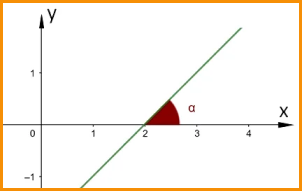

.png)
GEOMETRIA ANALÍTICA
A Geometria Analítica estuda elementos geométricos em um sistema de
coordenadas num plano ou espaço. Estes objetos geométricos são deter-
minados por sua localização e posição em relação a pontos e eixos deste
sistema de orientação.
Desde povos da antiguidade, como egípcios e romanos, a ideia de coor-
denadas já aparece na história. Mas é no século XVII, com os trabalhos
de René Descartes e Pierre de Fermat que este campo da Matemática se
sistematiza.
SISTEMA CARTESIANO ORTOGONAL
O Sistema Cartesiano Ortogonal é uma base de referência para localização de coordenadas. É constituído, em um plano, por dois eixos perpendiculares entre si. Ele é dividido em quatro quadrantes, sendo organizados da seguinte forma:
- A origem O(0,0) deste sistema é a intersecção destes eixos.
- O eixo x é o das abscissas.
- O eixo y é o das ordenadas.
- Convenciona-se a orientação anti-horária dos quatro quadrantes.
PAR ORDENADO
Um ponto qualquer no plano possui a coordenada P(x, y).
x é a abscissa do ponto P e constitui a distância entre sua projeção ortogonal no eixo x até a
origem.
y é a ordenada do ponto P e constitui a distância entre sua projeção ortogonal no eixo y até a
origem.
DISTÂNCIA ENTRE DOIS PONTOS
A distância entre dois pontos no plano cartesiano é o comprimento do segmento que une estes dois
pontos.
Fórmula da distância entre dois pontos retos B(Xy * Yb)quaisquer.
COORDENADAS DO PONTO MÉDIO
Ponto médio é o ponto que divide um segmento em duas partes de mesma medida.
Sendo M(Xm * Ym) o ponto médio de um segmento AB pilha , suas coordenadas são as médias aritméticas
das abscissas e ordenadas.
CONDIÇÃO DE ALINHAMENTO DE 3 PONTOS
Dados os pontos: A(Xa * Yb), B(Xb * Yb) * C(Xc * Yc)
Estes três pontos estarão alinhados se o determinante da seguinte matriz for igual a zero
COEFICIENTE ANGULAR DE UMA RETA
O coeficiente angular reto m de uma reta é a tangente de sua inclinação alfa em relação ao eixo x.
Para obter o coeficiente angular a partir de dois pontos:

Se m > 0 a reta é ascendente, caso contrário, se m < 0, a reta é decrescente.
Onde a, b e c são números reais constantes e, a e b não são simultaneamente nulos.
Onde a, b e c são números reais constantes e, a e b não são simultaneamente
nulos.
Dado um ponto A(Xo * Yo) e o coeficiente angular M.
A equação da reta será:
FORMA REDUZIDA DA EQUAÇÃO
Onde:
m é o coeficiente angular;
n é o coeficiente linear.
n é ordenada em que a reta intersecta o eixo y.

Posição relativa entre duas retas paralelas em um plano
Duas retas distintas são paralelas quando seus coeficientes angulares são iguais.
Se uma reta r possui coeficiente angular reto m com reto r subscrito, e uma reta s possui
coeficiente angular reto m com reto s subscrito, estas são paralelas quando:
Para isto, suas inclinações devem ser iguais
As tangentes são iguais quando os ângulos são iguais.
Para melhorar seus estudos...
Matemática pode ser um conteúdo difícil. Para aumentar seu aprendizado, acesse ao mapa mental e a playlist de vídeo aulas sobre este assunto:
Mapa mental playlist de videoaulas